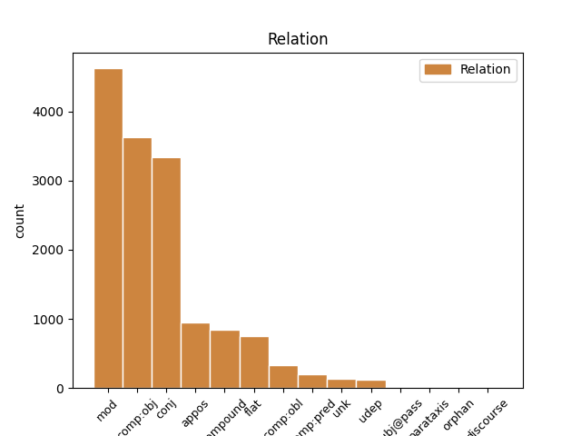
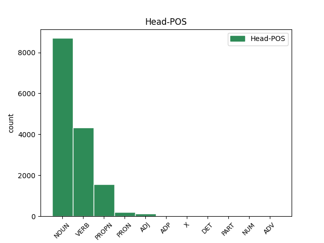
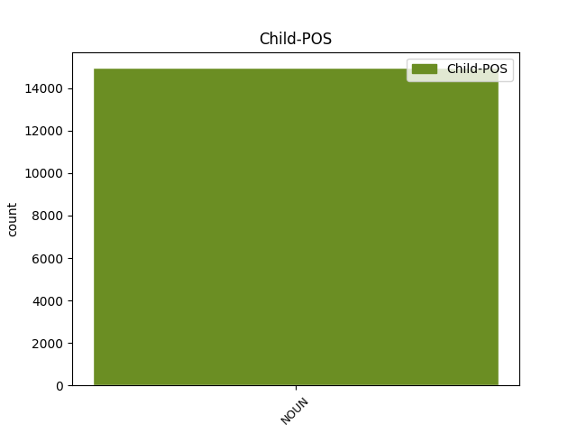

Distribution of features within this leaf



Agreement Rules sorted by frequency.
- When the dependent token is the modifer(mod) of the head token, and the head token is NOUN and the dependent token is NOUN.
1 Schon _ _ _ _ 0 _ _ _
2 früh _ _ _ _ 0 _ _ _
3 entwickelte _ _ _ _ 0 _ _ _
4 er _ _ _ _ 0 _ _ _
5 eine _ _ _ _ 0 _ _ _
6 Zuneigung _ _ _ _ 0 _ _ _
7 zu _ _ _ _ 0 _ _ _
8 den _ _ _ _ 0 _ _ _
9 Meteora _ _ _ _ 0 _ _ _
10 - _ _ _ _ 0 _ _ _
11 Klöstern _ _ _ _ 0 _ _ _
12 , _ _ _ _ 0 _ _ _
13 von _ _ _ _ 0 _ _ _
14 denen _ _ _ _ 0 _ _ _
15 einige _ _ _ _ 0 _ _ _
16 unter _ _ _ _ 0 _ _ _
17 der _ _ _ _ 0 _ _ _
18 Herrschaft Herrschaft NOUN NN Case=Dat|Gender=Fem|Number=Sing 0 _ _ _
19 seines _ _ _ _ 0 _ _ _
20 Vaters Vater NOUN NN Case=Gen|Gender=Masc|Number=Sing 18 mod _ _
21 entstanden _ _ _ _ 0 _ _ _
22 und _ _ _ _ 0 _ _ _
23 die _ _ _ _ 0 _ _ _
24 auch _ _ _ _ 0 _ _ _
25 er _ _ _ _ 0 _ _ _
26 finanziell _ _ _ _ 0 _ _ _
27 unterstützte _ _ _ _ 0 _ _ _
28 . _ _ _ _ 0 _ _ _
1 Doch _ _ _ _ 0 _ _ _
2 kann _ _ _ _ 0 _ _ _
3 man _ _ _ _ 0 _ _ _
4 alle _ _ _ _ 0 _ _ _
5 diese _ _ _ _ 0 _ _ _
6 Formen _ _ _ _ 0 _ _ _
7 auf _ _ _ _ 0 _ _ _
8 das _ _ _ _ 0 _ _ _
9 Wort _ _ _ _ 0 _ _ _
10 dyaus _ _ _ _ 0 _ _ _
11 zurückführen _ _ _ _ 0 _ _ _
12 , _ _ _ _ 0 _ _ _
13 das _ _ _ _ 0 _ _ _
14 als _ _ _ _ 0 _ _ _
15 " _ _ _ _ 0 _ _ _
16 Erscheinung Erscheinung NOUN NN Case=Nom|Gender=Fem|Number=Sing 0 _ _ _
17 " _ _ _ _ 0 _ _ _
18 oder _ _ _ _ 0 _ _ _
19 " _ _ _ _ 0 _ _ _
20 Strahlung Strahlung NOUN NN Case=Nom|Gender=Fem|Number=Sing 16 conj _ SpaceAfter=No
21 " _ _ _ _ 0 _ _ _
22 aufgefasst _ _ _ _ 0 _ _ _
23 werden _ _ _ _ 0 _ _ _
24 kann _ _ _ _ 0 _ _ _
25 . _ _ _ _ 0 _ _ _
1 Schon _ _ _ _ 0 _ _ _
2 früh _ _ _ _ 0 _ _ _
3 entwickelte entwickeln VERB VVFIN Mood=Ind|Number=Sing|Person=3|Tense=Past|VerbForm=Fin 0 _ _ _
4 er _ _ _ _ 0 _ _ _
5 eine _ _ _ _ 0 _ _ _
6 Zuneigung Zuneigung NOUN NN Case=Acc|Gender=Fem|Number=Sing 3 comp:obj _ _
7 zu _ _ _ _ 0 _ _ _
8 den _ _ _ _ 0 _ _ _
9 Meteora _ _ _ _ 0 _ _ _
10 - _ _ _ _ 0 _ _ _
11 Klöstern _ _ _ _ 0 _ _ _
12 , _ _ _ _ 0 _ _ _
13 von _ _ _ _ 0 _ _ _
14 denen _ _ _ _ 0 _ _ _
15 einige _ _ _ _ 0 _ _ _
16 unter _ _ _ _ 0 _ _ _
17 der _ _ _ _ 0 _ _ _
18 Herrschaft _ _ _ _ 0 _ _ _
19 seines _ _ _ _ 0 _ _ _
20 Vaters _ _ _ _ 0 _ _ _
21 entstanden _ _ _ _ 0 _ _ _
22 und _ _ _ _ 0 _ _ _
23 die _ _ _ _ 0 _ _ _
24 auch _ _ _ _ 0 _ _ _
25 er _ _ _ _ 0 _ _ _
26 finanziell _ _ _ _ 0 _ _ _
27 unterstützte _ _ _ _ 0 _ _ _
28 . _ _ _ _ 0 _ _ _
1 Gladwell _ _ _ _ 0 _ _ _
2 lenkt _ _ _ _ 0 _ _ _
3 den _ _ _ _ 0 _ _ _
4 Blick _ _ _ _ 0 _ _ _
5 auch _ _ _ _ 0 _ _ _
6 auf _ _ _ _ 0 _ _ _
7 scheinbare _ _ _ _ 0 _ _ _
8 Kleinigkeiten _ _ _ _ 0 _ _ _
9 , _ _ _ _ 0 _ _ _
10 zu _ _ _ _ 0 _ _ _
11 dem _ _ _ _ 0 _ _ _
12 Beispiel _ _ _ _ 0 _ _ _
13 die _ _ _ _ 0 _ _ _
14 Broken _ _ _ _ 0 _ _ _
15 - _ _ _ _ 0 _ _ _
16 Window Window PROPN NN Case=Nom|Gender=Fem|Number=Sing 0 _ _ _
17 - _ _ _ _ 0 _ _ _
18 Theorie Theorie NOUN NN Case=Nom|Gender=Fem|Number=Sing 16 flat _ SpaceAfter=No
19 , _ _ _ _ 0 _ _ _
20 die _ _ _ _ 0 _ _ _
21 ebenfalls _ _ _ _ 0 _ _ _
22 große _ _ _ _ 0 _ _ _
23 Bedeutung _ _ _ _ 0 _ _ _
24 haben _ _ _ _ 0 _ _ _
25 können _ _ _ _ 0 _ _ _
26 . _ _ _ _ 0 _ _ _
1 Die _ _ _ _ 0 _ _ _
2 fünfte _ _ _ _ 0 _ _ _
3 Single _ _ _ _ 0 _ _ _
4 , _ _ _ _ 0 _ _ _
5 die _ _ _ _ 0 _ _ _
6 Calling _ _ _ _ 0 _ _ _
7 You _ _ _ _ 0 _ _ _
8 ( _ _ _ _ 0 _ _ _
9 Remix _ _ _ _ 0 _ _ _
10 ) _ _ _ _ 0 _ _ _
11 heißt _ _ _ _ 0 _ _ _
12 , _ _ _ _ 0 _ _ _
13 gehörte _ _ _ _ 0 _ _ _
14 schon _ _ _ _ 0 _ _ _
15 zu _ _ _ _ 0 _ _ _
16 der _ _ _ _ 0 _ _ _
17 Premium Premium NOUN NN Case=Dat|Gender=Fem|Number=Sing 19 compound _ _
18 - _ _ _ _ 0 _ _ _
19 Edition Edition NOUN NN Case=Dat|Gender=Fem|Number=Sing 0 _ _ _
20 , _ _ _ _ 0 _ _ _
21 die _ _ _ _ 0 _ _ _
22 die _ _ _ _ 0 _ _ _
23 Band _ _ _ _ 0 _ _ _
24 2007 _ _ _ _ 0 _ _ _
25 unter _ _ _ _ 0 _ _ _
26 dem _ _ _ _ 0 _ _ _
27 Namen _ _ _ _ 0 _ _ _
28 Foiled _ _ _ _ 0 _ _ _
29 for _ _ _ _ 0 _ _ _
30 the _ _ _ _ 0 _ _ _
31 Last _ _ _ _ 0 _ _ _
32 Time _ _ _ _ 0 _ _ _
33 veröffentlichte _ _ _ _ 0 _ _ _
34 . _ _ _ _ 0 _ _ _
1 Das _ _ _ _ 0 _ _ _
2 letzte _ _ _ _ 0 _ _ _
3 planmäßige _ _ _ _ 0 _ _ _
4 überregionale _ _ _ _ 0 _ _ _
5 Güterzugpaar Güterzugpaar NOUN NN Case=Nom|Gender=Neut|Number=Sing 0 _ _ _
6 , _ _ _ _ 0 _ _ _
7 ein _ _ _ _ 0 _ _ _
8 Schnellgüterzug Schnellgüterzug NOUN NN Case=Nom|Gender=Masc|Number=Sing 5 appos _ _
9 ( _ _ _ _ 0 _ _ _
10 Sg _ _ _ _ 0 _ _ _
11 ) _ _ _ _ 0 _ _ _
12 Heidelberg _ _ _ _ 0 _ _ _
13 - _ _ _ _ 0 _ _ _
14 Würzburg _ _ _ _ 0 _ _ _
15 , _ _ _ _ 0 _ _ _
16 nutzte _ _ _ _ 0 _ _ _
17 die _ _ _ _ 0 _ _ _
18 Strecke _ _ _ _ 0 _ _ _
19 bis _ _ _ _ 0 _ _ _
20 Ende _ _ _ _ 0 _ _ _
21 der _ _ _ _ 0 _ _ _
22 1980er _ _ _ _ 0 _ _ _
23 Jahre _ _ _ _ 0 _ _ _
24 . _ _ _ _ 0 _ _ _
1 Rudolf Rudolf PROPN NE Case=Nom|Gender=Masc|Number=Sing 0 _ _ _
2 Uhlenhaut _ _ _ _ 0 _ _ _
3 , _ _ _ _ 0 _ _ _
4 Leiter Leiter NOUN NN Case=Nom|Gender=Masc|Number=Sing 1 appos _ _
5 des _ _ _ _ 0 _ _ _
6 Pkw _ _ _ _ 0 _ _ _
7 - _ _ _ _ 0 _ _ _
8 Versuchs _ _ _ _ 0 _ _ _
9 bei _ _ _ _ 0 _ _ _
10 Daimler _ _ _ _ 0 _ _ _
11 - _ _ _ _ 0 _ _ _
12 Benz _ _ _ _ 0 _ _ _
13 , _ _ _ _ 0 _ _ _
14 nahm _ _ _ _ 0 _ _ _
15 seine _ _ _ _ 0 _ _ _
16 Idee _ _ _ _ 0 _ _ _
17 eines _ _ _ _ 0 _ _ _
18 leichten _ _ _ _ 0 _ _ _
19 Rohrrahmens _ _ _ _ 0 _ _ _
20 wieder _ _ _ _ 0 _ _ _
21 auf _ _ _ _ 0 _ _ _
22 , _ _ _ _ 0 _ _ _
23 mit _ _ _ _ 0 _ _ _
24 dem _ _ _ _ 0 _ _ _
25 er _ _ _ _ 0 _ _ _
26 sich _ _ _ _ 0 _ _ _
27 einige _ _ _ _ 0 _ _ _
28 Jahre _ _ _ _ 0 _ _ _
29 zuvor _ _ _ _ 0 _ _ _
30 schon _ _ _ _ 0 _ _ _
31 befasst _ _ _ _ 0 _ _ _
32 hatte _ _ _ _ 0 _ _ _
33 . _ _ _ _ 0 _ _ _
1 Der _ _ _ _ 0 _ _ _
2 Bühler _ _ _ _ 0 _ _ _
3 Oberlehrer _ _ _ _ 0 _ _ _
4 Otto _ _ _ _ 0 _ _ _
5 Greule _ _ _ _ 0 _ _ _
6 ( _ _ _ _ 0 _ _ _
7 † _ _ _ _ 0 _ _ _
8 1970 _ _ _ _ 0 _ _ _
9 ) _ _ _ _ 0 _ _ _
10 verhalf verhelfen VERB VVFIN Mood=Ind|Number=Sing|Person=3|Tense=Past|VerbForm=Fin 0 _ _ _
11 der _ _ _ _ 0 _ _ _
12 damals _ _ _ _ 0 _ _ _
13 größten _ _ _ _ 0 _ _ _
14 katholischen _ _ _ _ 0 _ _ _
15 Kirchenorgel Kirchenorgel NOUN NN Case=Dat|Gender=Fem|Number=Sing 10 comp:obl _ _
16 Badens _ _ _ _ 0 _ _ _
17 insbesondere _ _ _ _ 0 _ _ _
18 durch _ _ _ _ 0 _ _ _
19 sein _ _ _ _ 0 _ _ _
20 konzertantes _ _ _ _ 0 _ _ _
21 Spiel _ _ _ _ 0 _ _ _
22 zu _ _ _ _ 0 _ _ _
23 überregionaler _ _ _ _ 0 _ _ _
24 Berühmtheit _ _ _ _ 0 _ _ _
25 . _ _ _ _ 0 _ _ _
1 Er _ _ _ _ 0 _ _ _
2 beteiligte _ _ _ _ 0 _ _ _
3 sich _ _ _ _ 0 _ _ _
4 an _ _ _ _ 0 _ _ _
5 dem _ _ _ _ 0 _ _ _
6 Bewegung _ _ _ _ 0 _ _ _
7 Freies _ _ _ _ 0 _ _ _
8 Deutschland _ _ _ _ 0 _ _ _
9 für _ _ _ _ 0 _ _ _
10 den _ _ _ _ 0 _ _ _
11 Westen _ _ _ _ 0 _ _ _
12 und _ _ _ _ 0 _ _ _
13 wurde werden VERB VAFIN Mood=Ind|Number=Sing|Person=3|Tense=Past|VerbForm=Fin 0 _ _ _
14 Präsident Präsident NOUN NN Case=Nom|Gender=Masc|Number=Sing 13 comp:pred _ _
15 der _ _ _ _ 0 _ _ _
16 Region _ _ _ _ 0 _ _ _
17 Toulouse _ _ _ _ 0 _ _ _
18 . _ _ _ _ 0 _ _ _
1 Vielleicht _ _ _ _ 0 _ _ _
2 besteht _ _ _ _ 0 _ _ _
3 eine _ _ _ _ 0 _ _ _
4 Verbindung _ _ _ _ 0 _ _ _
5 zwischen _ _ _ _ 0 _ _ _
6 Suanlogha Suanlogha PROPN NE Case=Dat|Gender=Fem|Number=Sing 0 _ _ _
7 und _ _ _ _ 0 _ _ _
8 Ragnars _ _ _ _ 0 _ _ _
9 Frau Frau NOUN NN Case=Nom|Gender=Fem|Number=Sing 6 conj _ _
10 Aslaug _ _ _ _ 0 _ _ _
11 , _ _ _ _ 0 _ _ _
12 die _ _ _ _ 0 _ _ _
13 bei _ _ _ _ 0 _ _ _
14 Saxo _ _ _ _ 0 _ _ _
15 nicht _ _ _ _ 0 _ _ _
16 vorkommt _ _ _ _ 0 _ _ _
17 . _ _ _ _ 0 _ _ _
1 1960 _ _ _ _ 0 _ _ _
2 gründete _ _ _ _ 0 _ _ _
3 er _ _ _ _ 0 _ _ _
4 das _ _ _ _ 0 _ _ _
5 Family _ _ _ _ 0 _ _ _
6 Institute _ _ _ _ 0 _ _ _
7 und _ _ _ _ 0 _ _ _
8 1962 _ _ _ _ 0 _ _ _
9 -- _ _ _ _ 0 _ _ _
10 gemeinsam _ _ _ _ 0 _ _ _
11 mit _ _ _ _ 0 _ _ _
12 Don Don NOUN NE Case=Dat|Gender=Masc|Number=Sing 13 compound _ _
13 D. D. PROPN NE Case=Dat|Gender=Masc|Number=Sing 0 _ _ _
14 Jackson _ _ _ _ 0 _ _ _
15 -- _ _ _ _ 0 _ _ _
16 die _ _ _ _ 0 _ _ _
17 heute _ _ _ _ 0 _ _ _
18 renommierte _ _ _ _ 0 _ _ _
19 Fachzeitschrift _ _ _ _ 0 _ _ _
20 Family _ _ _ _ 0 _ _ _
21 Process _ _ _ _ 0 _ _ _
22 . _ _ _ _ 0 _ _ _
1 Der _ _ _ _ 0 _ _ _
2 Dreiseithof _ _ _ _ 0 _ _ _
3 Altnaundorf _ _ _ _ 0 _ _ _
4 35 _ _ _ _ 0 _ _ _
5 liegt _ _ _ _ 0 _ _ _
6 an _ _ _ _ 0 _ _ _
7 dem _ _ _ _ 0 _ _ _
8 Anger Anger PROPN NN Case=Dat|Gender=Masc|Number=Sing 0 _ _ _
9 des _ _ _ _ 0 _ _ _
10 Stadtteils Stadtteil NOUN NN Case=Gen|Gender=Masc|Number=Sing 8 mod _ _
11 Naundorf _ _ _ _ 0 _ _ _
12 der _ _ _ _ 0 _ _ _
13 sächsischen _ _ _ _ 0 _ _ _
14 Stadt _ _ _ _ 0 _ _ _
15 Radebeul _ _ _ _ 0 _ _ _
16 . _ _ _ _ 0 _ _ _
1 In _ _ _ _ 0 _ _ _
2 der _ _ _ _ 0 _ _ _
3 Mitte _ _ _ _ 0 _ _ _
4 erhielt erhalten VERB VVFIN Mood=Ind|Number=Sing|Person=3|Tense=Past|VerbForm=Fin 0 _ _ _
5 Gnaeus _ _ _ _ 0 _ _ _
6 Domitius _ _ _ _ 0 _ _ _
7 Calvinus _ _ _ _ 0 _ _ _
8 den _ _ _ _ 0 _ _ _
9 Befehl Befehl NOUN NN Case=Acc|Gender=Masc|Number=Sing 4 udep _ SpaceAfter=No
10 . _ _ _ _ 0 _ _ _
1 Ernst _ _ _ _ 0 _ _ _
2 erhielt _ _ _ _ 0 _ _ _
3 daraufhin _ _ _ _ 0 _ _ _
4 ( _ _ _ _ 0 _ _ _
5 spätestens _ _ _ _ 0 _ _ _
6 1372 _ _ _ _ 0 _ _ _
7 ) _ _ _ _ 0 _ _ _
8 die _ _ _ _ 0 _ _ _
9 einträgliche _ _ _ _ 0 _ _ _
10 Pfründe _ _ _ _ 0 _ _ _
11 des _ _ _ _ 0 _ _ _
12 Propsts _ _ _ _ 0 _ _ _
13 an _ _ _ _ 0 _ _ _
14 dem _ _ _ _ 0 _ _ _
15 Alexanderstift _ _ _ _ 0 _ _ _
16 in _ _ _ _ 0 _ _ _
17 Einbeck _ _ _ _ 0 _ _ _
18 , _ _ _ _ 0 _ _ _
19 wo _ _ _ _ 0 _ _ _
20 die _ _ _ _ 0 _ _ _
21 Herzöge _ _ _ _ 0 _ _ _
22 von _ _ _ _ 0 _ _ _
23 Grubenhagen _ _ _ _ 0 _ _ _
24 das _ _ _ _ 0 _ _ _
25 Recht _ _ _ _ 0 _ _ _
26 hatten _ _ _ _ 0 _ _ _
27 , _ _ _ _ 0 _ _ _
28 wichtige _ _ _ _ 0 _ _ _
29 Ämter _ _ _ _ 0 _ _ _
30 wie _ _ _ _ 0 _ _ _
31 das der PRON PDS Case=Nom|Gender=Neut|Number=Sing|PronType=Dem 0 _ _ _
32 des _ _ _ _ 0 _ _ _
33 Propstes Propstes NOUN NN Case=Gen|Gender=Masc|Number=Sing 31 mod _ _
34 zu _ _ _ _ 0 _ _ _
35 besetzen _ _ _ _ 0 _ _ _
36 . _ _ _ _ 0 _ _ _
1 Plastik _ _ _ _ 0 _ _ _
2 - _ _ _ _ 0 _ _ _
3 Bilder _ _ _ _ 0 _ _ _
4 Grafik Grafik NOUN NE Case=Nom|Gender=Fem|Number=Sing 10 unk _ _
5 " _ _ _ _ 0 _ _ _
6 in _ _ _ _ 0 _ _ _
7 der _ _ _ _ 0 _ _ _
8 " _ _ _ _ 0 _ _ _
9 Neuen _ _ _ _ 0 _ _ _
10 Galerie Galerie PROPN NN Case=Dat|Gender=Fem|Number=Sing 0 _ _ _
11 der _ _ _ _ 0 _ _ _
12 Stadt _ _ _ _ 0 _ _ _
13 Linz _ _ _ _ 0 _ _ _
14 " _ _ _ _ 0 _ _ _
15 statt _ _ _ _ 0 _ _ _
16 . _ _ _ _ 0 _ _ _
1 Tierarzneischule Tierarzneischule NOUN NN Case=Nom|Gender=Fem|Number=Sing 4 unk _ _
2 in _ _ _ _ 0 _ _ _
3 Berlin _ _ _ _ 0 _ _ _
4 studierte studieren VERB VVFIN Mood=Ind|Number=Sing|Person=3|Tense=Past|VerbForm=Fin 0 _ _ _
5 er _ _ _ _ 0 _ _ _
6 von _ _ _ _ 0 _ _ _
7 1847 _ _ _ _ 0 _ _ _
8 bis _ _ _ _ 0 _ _ _
9 1851 _ _ _ _ 0 _ _ _
10 . _ _ _ _ 0 _ _ _
1 Synonym synonym NOUN NN Case=Nom|Gender=Neut|Number=Sing 16 unk _ SpaceAfter=No
2 : _ _ _ _ 0 _ _ _
3 Lithobates _ _ _ _ 0 _ _ _
4 catesbeianus _ _ _ _ 0 _ _ _
5 ) _ _ _ _ 0 _ _ _
6 , _ _ _ _ 0 _ _ _
7 genauer _ _ _ _ 0 _ _ _
8 : _ _ _ _ 0 _ _ _
9 Nordamerikanischer _ _ _ _ 0 _ _ _
10 Ochsenfrosch _ _ _ _ 0 _ _ _
11 , _ _ _ _ 0 _ _ _
12 ist _ _ _ _ 0 _ _ _
13 eine _ _ _ _ 0 _ _ _
14 ursprünglich _ _ _ _ 0 _ _ _
15 nordamerikanische _ _ _ _ 0 _ _ _
16 Amphibienart Amphibienart NOUN NN Case=Nom|Gender=Fem|Number=Sing 0 _ _ _
17 aus _ _ _ _ 0 _ _ _
18 der _ _ _ _ 0 _ _ _
19 Familie _ _ _ _ 0 _ _ _
20 der _ _ _ _ 0 _ _ _
21 Echten _ _ _ _ 0 _ _ _
22 Frösche _ _ _ _ 0 _ _ _
23 . _ _ _ _ 0 _ _ _
1 Eine _ _ _ _ 0 _ _ _
2 Statue _ _ _ _ 0 _ _ _
3 des _ _ _ _ 0 _ _ _
4 Kirchenpatrons _ _ _ _ 0 _ _ _
5 St. _ _ _ _ 0 _ _ _
6 Martin _ _ _ _ 0 _ _ _
7 steht stehen VERB VVFIN Mood=Ind|Number=Sing|Person=3|Tense=Pres|VerbForm=Fin 0 _ _ _
8 direkt _ _ _ _ 0 _ _ _
9 unter _ _ _ _ 0 _ _ _
10 der _ _ _ _ 0 _ _ _
11 Krone _ _ _ _ 0 _ _ _
12 des _ _ _ _ 0 _ _ _
13 Hochaltars _ _ _ _ 0 _ _ _
14 , _ _ _ _ 0 _ _ _
15 darunter _ _ _ _ 0 _ _ _
16 eine _ _ _ _ 0 _ _ _
17 Statue Statue NOUN NN Case=Acc|Gender=Fem|Number=Sing 7 conj _ _
18 der _ _ _ _ 0 _ _ _
19 Maria _ _ _ _ 0 _ _ _
20 Himmelskönigin _ _ _ _ 0 _ _ _
21 die _ _ _ _ 0 _ _ _
22 von _ _ _ _ 0 _ _ _
23 Engeln _ _ _ _ 0 _ _ _
24 umgeben _ _ _ _ 0 _ _ _
25 ist _ _ _ _ 0 _ _ _
26 . _ _ _ _ 0 _ _ _
1 Oben _ _ _ _ 0 _ _ _
2 wachsend _ _ _ _ 0 _ _ _
3 die _ _ _ _ 0 _ _ _
4 rot _ _ _ _ 0 _ _ _
5 gekleidete _ _ _ _ 0 _ _ _
6 heilige _ _ _ _ 0 _ _ _
7 Margaretha _ _ _ _ 0 _ _ _
8 mit _ _ _ _ 0 _ _ _
9 goldener _ _ _ _ 0 _ _ _
10 Märtyrerkrone _ _ _ _ 0 _ _ _
11 , _ _ _ _ 0 _ _ _
12 in _ _ _ _ 0 _ _ _
13 der _ _ _ _ 0 _ _ _
14 Rechten _ _ _ _ 0 _ _ _
15 ein _ _ _ _ 0 _ _ _
16 gesenktes _ _ _ _ 0 _ _ _
17 goldenes _ _ _ _ 0 _ _ _
18 Schwert _ _ _ _ 0 _ _ _
19 , _ _ _ _ 0 _ _ _
20 in _ _ _ _ 0 _ _ _
21 der _ _ _ _ 0 _ _ _
22 Linken Linke NOUN NN Case=Dat|Gender=Fem|Number=Sing 0 _ _ _
23 ein _ _ _ _ 0 _ _ _
24 goldenes _ _ _ _ 0 _ _ _
25 Buch Buch NOUN NN Case=Acc|Gender=Neut|Number=Sing 22 comp:obj _ _
26 haltend _ _ _ _ 0 _ _ _
27 und _ _ _ _ 0 _ _ _
28 beiderseits _ _ _ _ 0 _ _ _
29 begleitet _ _ _ _ 0 _ _ _
30 von _ _ _ _ 0 _ _ _
31 jeweils _ _ _ _ 0 _ _ _
32 zwei _ _ _ _ 0 _ _ _
33 sechsstrahligen _ _ _ _ 0 _ _ _
34 blauen _ _ _ _ 0 _ _ _
35 Sternen _ _ _ _ 0 _ _ _
36 übereinander _ _ _ _ 0 _ _ _
37 . _ _ _ _ 0 _ _ _
1 Ebenfalls _ _ _ _ 0 _ _ _
2 dort _ _ _ _ 0 _ _ _
3 befindet _ _ _ _ 0 _ _ _
4 sich _ _ _ _ 0 _ _ _
5 der _ _ _ _ 0 _ _ _
6 Grabstein _ _ _ _ 0 _ _ _
7 des _ _ _ _ 0 _ _ _
8 Georg _ _ _ _ 0 _ _ _
9 Friedrich _ _ _ _ 0 _ _ _
10 Laemmlin _ _ _ _ 0 _ _ _
11 , _ _ _ _ 0 _ _ _
12 eines _ _ _ _ 0 _ _ _
13 knapp _ _ _ _ 0 _ _ _
14 27 _ _ _ _ 0 _ _ _
15 Wochen Woche NOUN NN Case=Dat|Gender=Fem|Number=Plur 16 mod _ _
16 alten alt ADJ ADJA Case=Dat|Gender=Masc|Number=Plur 0 _ _ _
17 Knaben _ _ _ _ 0 _ _ _
18 , _ _ _ _ 0 _ _ _
19 der _ _ _ _ 0 _ _ _
20 als _ _ _ _ 0 _ _ _
21 letzter _ _ _ _ 0 _ _ _
22 Nachkömmling _ _ _ _ 0 _ _ _
23 der _ _ _ _ 0 _ _ _
24 Familie _ _ _ _ 0 _ _ _
25 in _ _ _ _ 0 _ _ _
26 dem _ _ _ _ 0 _ _ _
27 Jahr _ _ _ _ 0 _ _ _
28 1605 _ _ _ _ 0 _ _ _
29 starb _ _ _ _ 0 _ _ _
30 . _ _ _ _ 0 _ _ _
1 Dies dies PRON PDS Case=Nom|Gender=Neut|Number=Sing|PronType=Dem 0 _ _ _
2 und _ _ _ _ 0 _ _ _
3 das _ _ _ _ 0 _ _ _
4 reichliche _ _ _ _ 0 _ _ _
5 Nahrungsangebot Nahrungsangebot NOUN NN Case=Acc|Gender=Neut|Number=Sing 1 conj _ _
6 in _ _ _ _ 0 _ _ _
7 dem _ _ _ _ 0 _ _ _
8 Vorgebirge _ _ _ _ 0 _ _ _
9 führen _ _ _ _ 0 _ _ _
10 dazu _ _ _ _ 0 _ _ _
11 , _ _ _ _ 0 _ _ _
12 dass _ _ _ _ 0 _ _ _
13 es _ _ _ _ 0 _ _ _
14 in _ _ _ _ 0 _ _ _
15 dem _ _ _ _ 0 _ _ _
16 Zittauer _ _ _ _ 0 _ _ _
17 Gebirge _ _ _ _ 0 _ _ _
18 seit _ _ _ _ 0 _ _ _
19 vielen _ _ _ _ 0 _ _ _
20 Jahren _ _ _ _ 0 _ _ _
21 eine _ _ _ _ 0 _ _ _
22 kleine _ _ _ _ 0 _ _ _
23 aber _ _ _ _ 0 _ _ _
24 stabile _ _ _ _ 0 _ _ _
25 Uhupopulation _ _ _ _ 0 _ _ _
26 gibt _ _ _ _ 0 _ _ _
27 . _ _ _ _ 0 _ _ _
1 Die _ _ _ _ 0 _ _ _
2 derzeitige _ _ _ _ 0 _ _ _
3 " _ _ _ _ 0 _ _ _
4 Gesellschaft _ _ _ _ 0 _ _ _
5 des _ _ _ _ 0 _ _ _
6 Spektakels _ _ _ _ 0 _ _ _
7 " _ _ _ _ 0 _ _ _
8 in _ _ _ _ 0 _ _ _
9 dem _ _ _ _ 0 _ _ _
10 Westen _ _ _ _ 0 _ _ _
11 sei _ _ _ _ 0 _ _ _
12 eine _ _ _ _ 0 _ _ _
13 Gesellschaft _ _ _ _ 0 _ _ _
14 , _ _ _ _ 0 _ _ _
15 die _ _ _ _ 0 _ _ _
16 das _ _ _ _ 0 _ _ _
17 Oberflächliche _ _ _ _ 0 _ _ _
18 feiert _ _ _ _ 0 _ _ _
19 , _ _ _ _ 0 _ _ _
20 in _ _ _ _ 0 _ _ _
21 dem _ _ _ _ 0 _ _ _
22 Konsum _ _ _ _ 0 _ _ _
23 Erfüllung _ _ _ _ 0 _ _ _
24 finden _ _ _ _ 0 _ _ _
25 möchte _ _ _ _ 0 _ _ _
26 , _ _ _ _ 0 _ _ _
27 sich _ _ _ _ 0 _ _ _
28 in _ _ _ _ 0 _ _ _
29 den _ _ _ _ 0 _ _ _
30 Medien _ _ _ _ 0 _ _ _
31 selbst _ _ _ _ 0 _ _ _
32 betrachtet _ _ _ _ 0 _ _ _
33 und _ _ _ _ 0 _ _ _
34 bewundert _ _ _ _ 0 _ _ _
35 und _ _ _ _ 0 _ _ _
36 alles _ _ _ _ 0 _ _ _
37 für _ _ _ _ 0 _ _ _
38 messbar _ _ _ _ 0 _ _ _
39 und _ _ _ _ 0 _ _ _
40 käuflich _ _ _ _ 0 _ _ _
41 hält _ _ _ _ 0 _ _ _
42 , _ _ _ _ 0 _ _ _
43 " _ _ _ _ 0 _ _ _
44 in _ _ _ _ 0 _ _ _
45 der _ _ _ _ 0 _ _ _
46 die _ _ _ _ 0 _ _ _
47 Ware _ _ _ _ 0 _ _ _
48 sich _ _ _ _ 0 _ _ _
49 selbst _ _ _ _ 0 _ _ _
50 in _ _ _ _ 0 _ _ _
51 einer _ _ _ _ 0 _ _ _
52 von _ _ _ _ 0 _ _ _
53 ihr _ _ _ _ 0 _ _ _
54 geschaffenen _ _ _ _ 0 _ _ _
55 Welt _ _ _ _ 0 _ _ _
56 anschaut anschauen VERB VVFIN Mood=Ind|Number=Sing|Person=3|Tense=Pres|VerbForm=Fin 0 _ _ _
57 " _ _ _ _ 0 _ _ _
58 ( _ _ _ _ 0 _ _ _
59 S. S. NOUN NN Case=Nom|Gender=Masc|Number=Sing 56 appos _ _
60 41 _ _ _ _ 0 _ _ _
61 ) _ _ _ _ 0 _ _ _
62 . _ _ _ _ 0 _ _ _
1 Anfang _ _ _ _ 0 _ _ _
2 der _ _ _ _ 0 _ _ _
3 sechziger _ _ _ _ 0 _ _ _
4 Jahre _ _ _ _ 0 _ _ _
5 tritt _ _ _ _ 0 _ _ _
6 eines ein PRON PIS Case=Nom|Definite=Ind|Gender=Neut|Number=Sing|PronType=Ind 0 _ _ _
7 der _ _ _ _ 0 _ _ _
8 künftig _ _ _ _ 0 _ _ _
9 werkbestimmenden _ _ _ _ 0 _ _ _
10 Motive _ _ _ _ 0 _ _ _
11 auf _ _ _ _ 0 _ _ _
12 : _ _ _ _ 0 _ _ _
13 die _ _ _ _ 0 _ _ _
14 Stadt Stadt NOUN NN Case=Nom|Gender=Fem|Number=Sing 6 appos _ SpaceAfter=No
15 . _ _ _ _ 0 _ _ _
1 Gleichzeitig _ _ _ _ 0 _ _ _
2 wird werden VERB VAFIN Mood=Ind|Number=Sing|Person=3|Tense=Pres|VerbForm=Fin|Voice=Pass 0 _ _ _
3 Wärme Wärme NOUN NN Case=Nom|Gender=Fem|Number=Sing 2 subj@pass _ _
4 frei _ _ _ _ 0 _ _ _
5 , _ _ _ _ 0 _ _ _
6 die _ _ _ _ 0 _ _ _
7 in _ _ _ _ 0 _ _ _
8 dem _ _ _ _ 0 _ _ _
9 Fahrzeug _ _ _ _ 0 _ _ _
10 z.B. _ _ _ _ 0 _ _ _
11 in _ _ _ _ 0 _ _ _
12 dem _ _ _ _ 0 _ _ _
13 Winter _ _ _ _ 0 _ _ _
14 zu _ _ _ _ 0 _ _ _
15 Heizzwecken _ _ _ _ 0 _ _ _
16 genutzt _ _ _ _ 0 _ _ _
17 werden _ _ _ _ 0 _ _ _
18 kann _ _ _ _ 0 _ _ _
19 . _ _ _ _ 0 _ _ _
1 John _ _ _ _ 0 _ _ _
2 Eliot _ _ _ _ 0 _ _ _
3 Gardiner _ _ _ _ 0 _ _ _
4 bewundert _ _ _ _ 0 _ _ _
5 besonders _ _ _ _ 0 _ _ _
6 den _ _ _ _ 0 _ _ _
7 vierstimmigen _ _ _ _ 0 _ _ _
8 Satz _ _ _ _ 0 _ _ _
9 des _ _ _ _ 0 _ _ _
10 zwölfzeiligen _ _ _ _ 0 _ _ _
11 Schlusschorals _ _ _ _ 0 _ _ _
12 für _ _ _ _ 0 _ _ _
13 seine _ _ _ _ 0 _ _ _
14 Tonmalerei _ _ _ _ 0 _ _ _
15 zu _ _ _ _ 0 _ _ _
16 den _ _ _ _ 0 _ _ _
17 herbstlichen _ _ _ _ 0 _ _ _
18 Worten _ _ _ _ 0 _ _ _
19 " _ _ _ _ 0 _ _ _
20 Gleichwie Gleichwie ADP NN Case=Dat|Gender=Fem|Number=Sing 0 _ _ _
21 das _ _ _ _ 0 _ _ _
22 Gras Gras NOUN NN Case=Acc|Gender=Neut|Number=Sing 20 comp:obj _ _
23 von _ _ _ _ 0 _ _ _
24 dem _ _ _ _ 0 _ _ _
25 Rechen _ _ _ _ 0 _ _ _
26 , _ _ _ _ 0 _ _ _
27 ein _ _ _ _ 0 _ _ _
28 Blum _ _ _ _ 0 _ _ _
29 und _ _ _ _ 0 _ _ _
30 fallendes _ _ _ _ 0 _ _ _
31 Laub _ _ _ _ 0 _ _ _
32 , _ _ _ _ 0 _ _ _
33 der _ _ _ _ 0 _ _ _
34 Wind _ _ _ _ 0 _ _ _
35 nur _ _ _ _ 0 _ _ _
36 drüber _ _ _ _ 0 _ _ _
37 wehet _ _ _ _ 0 _ _ _
38 " _ _ _ _ 0 _ _ _
39 , _ _ _ _ 0 _ _ _
40 und _ _ _ _ 0 _ _ _
41 vergleicht _ _ _ _ 0 _ _ _
42 ihn _ _ _ _ 0 _ _ _
43 mit _ _ _ _ 0 _ _ _
44 dem _ _ _ _ 0 _ _ _
45 zentralen _ _ _ _ 0 _ _ _
46 Satz _ _ _ _ 0 _ _ _
47 der _ _ _ _ 0 _ _ _
48 Motette _ _ _ _ 0 _ _ _
49 Singet _ _ _ _ 0 _ _ _
50 dem _ _ _ _ 0 _ _ _
51 Herrn _ _ _ _ 0 _ _ _
52 ein _ _ _ _ 0 _ _ _
53 neues _ _ _ _ 0 _ _ _
54 Lied _ _ _ _ 0 _ _ _
55 , _ _ _ _ 0 _ _ _
56 BWV _ _ _ _ 0 _ _ _
57 225 _ _ _ _ 0 _ _ _
58 . _ _ _ _ 0 _ _ _
1 Der _ _ _ _ 0 _ _ _
2 Sohn _ _ _ _ 0 _ _ _
3 wuchs _ _ _ _ 0 _ _ _
4 in _ _ _ _ 0 _ _ _
5 Militärkreisen _ _ _ _ 0 _ _ _
6 auf _ _ _ _ 0 _ _ _
7 , _ _ _ _ 0 _ _ _
8 studierte studieren VERB VVFIN Mood=Ind|Number=Sing|Person=3|Tense=Past|VerbForm=Fin 0 _ _ _
9 in _ _ _ _ 0 _ _ _
10 Rom _ _ _ _ 0 _ _ _
11 `` _ _ _ _ 0 _ _ _
12 sowohl _ _ _ _ 0 _ _ _
13 Kriegs Krieg NOUN TRUNC Case=Acc|Gender=Fem|Number=Sing 8 compound _ SpaceAfter=No
14 - _ _ _ _ 0 _ _ _
15 als _ _ _ _ 0 _ _ _
16 Stattbaukunst _ _ _ _ 0 _ _ _
17 '' _ _ _ _ 0 _ _ _
18 und _ _ _ _ 0 _ _ _
19 machte _ _ _ _ 0 _ _ _
20 als _ _ _ _ 0 _ _ _
21 Festungsingenieur _ _ _ _ 0 _ _ _
22 unter _ _ _ _ 0 _ _ _
23 Prinz _ _ _ _ 0 _ _ _
24 Eugen _ _ _ _ 0 _ _ _
25 drei _ _ _ _ 0 _ _ _
26 Feldzüge _ _ _ _ 0 _ _ _
27 in _ _ _ _ 0 _ _ _
28 Piemont _ _ _ _ 0 _ _ _
29 mit _ _ _ _ 0 _ _ _
30 . _ _ _ _ 0 _ _ _
1 Die _ _ _ _ 0 _ _ _
2 den _ _ _ _ 0 _ _ _
3 Wohngebäuden Wohngebäude NOUN NN Case=Dat|Gender=Neut|Number=Plur 5 comp:obl _ _
4 nahe _ _ _ _ 0 _ _ _
5 liegenden liegend ADJ ADJA Case=Dat|Gender=Neut|Number=Plur 0 _ _ _
6 Wirtschaftsgebäude _ _ _ _ 0 _ _ _
7 sind _ _ _ _ 0 _ _ _
8 gemauert _ _ _ _ 0 _ _ _
9 , _ _ _ _ 0 _ _ _
10 der _ _ _ _ 0 _ _ _
11 obere _ _ _ _ 0 _ _ _
12 Theil _ _ _ _ 0 _ _ _
13 aber _ _ _ _ 0 _ _ _
14 mit _ _ _ _ 0 _ _ _
15 Holz _ _ _ _ 0 _ _ _
16 gezimmert _ _ _ _ 0 _ _ _
17 , _ _ _ _ 0 _ _ _
18 und _ _ _ _ 0 _ _ _
19 mit _ _ _ _ 0 _ _ _
20 Stroh _ _ _ _ 0 _ _ _
21 eingedeckt _ _ _ _ 0 _ _ _
22 . _ _ _ _ 0 _ _ _
23 " _ _ _ _ 0 _ _ _
1 Ab _ _ _ _ 0 _ _ _
2 1890 _ _ _ _ 0 _ _ _
3 bildete _ _ _ _ 0 _ _ _
4 er _ _ _ _ 0 _ _ _
5 in _ _ _ _ 0 _ _ _
6 dem _ _ _ _ 0 _ _ _
7 Rahmen _ _ _ _ 0 _ _ _
8 erster _ _ _ _ 0 _ _ _
9 militär militär NOUN ADJA Case=Nom|Gender=Masc|Number=Sing 11 compound _ _
10 - _ _ _ _ 0 _ _ _
11 aeronautischer aeronautischer ADJ ADJA Case=Nom|Gender=Masc|Number=Sing 0 _ _ _
12 Kurse _ _ _ _ 0 _ _ _
13 unter _ _ _ _ 0 _ _ _
14 anderem _ _ _ _ 0 _ _ _
15 auch _ _ _ _ 0 _ _ _
16 die _ _ _ _ 0 _ _ _
17 ersten _ _ _ _ 0 _ _ _
18 Ballonfahrer _ _ _ _ 0 _ _ _
19 der _ _ _ _ 0 _ _ _
20 k.u.k. _ _ _ _ 0 _ _ _
21 Armee _ _ _ _ 0 _ _ _
22 aus _ _ _ _ 0 _ _ _
23 , _ _ _ _ 0 _ _ _
24 darunter _ _ _ _ 0 _ _ _
25 auch _ _ _ _ 0 _ _ _
26 Franz _ _ _ _ 0 _ _ _
27 Hinterstoisser _ _ _ _ 0 _ _ _
28 . _ _ _ _ 0 _ _ _
1 Seitdem _ _ _ _ 0 _ _ _
2 hat _ _ _ _ 0 _ _ _
3 sie _ _ _ _ 0 _ _ _
4 einen _ _ _ _ 0 _ _ _
5 wiederkehrenden _ _ _ _ 0 _ _ _
6 Tagtraum _ _ _ _ 0 _ _ _
7 von _ _ _ _ 0 _ _ _
8 ihrer _ _ _ _ 0 _ _ _
9 eine _ _ _ _ 0 _ _ _
10 Geburtstagstorte Geburtstagstorte NOUN NN Case=Acc|Gender=Fem|Number=Sing 14 comp:obj _ _
11 mit _ _ _ _ 0 _ _ _
12 fünf _ _ _ _ 0 _ _ _
13 Kerzen _ _ _ _ 0 _ _ _
14 auspustenden auspustenden ADJ ADJA Case=Dat|Gender=Fem|Number=Sing 0 _ _ _
15 Tochter _ _ _ _ 0 _ _ _
16 . _ _ _ _ 0 _ _ _
1 Das _ _ _ _ 0 _ _ _
2 Pro Pro ADP NN Case=Nom|Gender=Neut|Number=Sing 0 _ _ _
3 - _ _ _ _ 0 _ _ _
4 Kopf Kopf NOUN NN Case=Nom|Gender=Neut|Number=Sing 2 mod _ _
5 - _ _ _ _ 0 _ _ _
6 Einkommen _ _ _ _ 0 _ _ _
7 betrug _ _ _ _ 0 _ _ _
8 23.998 _ _ _ _ 0 _ _ _
9 USD _ _ _ _ 0 _ _ _
10 . _ _ _ _ 0 _ _ _
1 November November PROPN NN Case=Nom|Gender=Masc|Number=Sing 0 _ _ _
2 1938 _ _ _ _ 0 _ _ _
3 erstmals _ _ _ _ 0 _ _ _
4 in _ _ _ _ 0 _ _ _
5 dem _ _ _ _ 0 _ _ _
6 Rahmen _ _ _ _ 0 _ _ _
7 seiner _ _ _ _ 0 _ _ _
8 Forschung _ _ _ _ 0 _ _ _
9 zu _ _ _ _ 0 _ _ _
10 dem _ _ _ _ 0 _ _ _
11 Mutterkorn _ _ _ _ 0 _ _ _
12 Lysergsäurediethylamid Lysergsäurediethylamid NOUN NE Case=Dat|Gender=Neut|Number=Sing 1 comp:obj _ _
13 her _ _ _ _ 0 _ _ _
14 . _ _ _ _ 0 _ _ _
1 Die _ _ _ _ 0 _ _ _
2 ehemalige _ _ _ _ 0 _ _ _
3 katholische _ _ _ _ 0 _ _ _
4 Pfarrkirche Pfarrkirche NOUN NN Case=Nom|Gender=Fem|Number=Sing 37 unk _ _
5 St. _ _ _ _ 0 _ _ _
6 Peter _ _ _ _ 0 _ _ _
7 und _ _ _ _ 0 _ _ _
8 Paul _ _ _ _ 0 _ _ _
9 , _ _ _ _ 0 _ _ _
10 heute _ _ _ _ 0 _ _ _
11 die _ _ _ _ 0 _ _ _
12 Griechisch _ _ _ _ 0 _ _ _
13 - _ _ _ _ 0 _ _ _
14 orthodoxe _ _ _ _ 0 _ _ _
15 Kirche _ _ _ _ 0 _ _ _
16 Johannes _ _ _ _ 0 _ _ _
17 der _ _ _ _ 0 _ _ _
18 Täufer _ _ _ _ 0 _ _ _
19 , _ _ _ _ 0 _ _ _
20 in _ _ _ _ 0 _ _ _
21 Kleinbüllesheim _ _ _ _ 0 _ _ _
22 , _ _ _ _ 0 _ _ _
23 einem _ _ _ _ 0 _ _ _
24 Stadtteil _ _ _ _ 0 _ _ _
25 von _ _ _ _ 0 _ _ _
26 Euskirchen _ _ _ _ 0 _ _ _
27 in _ _ _ _ 0 _ _ _
28 dem _ _ _ _ 0 _ _ _
29 Kreis _ _ _ _ 0 _ _ _
30 Euskirchen _ _ _ _ 0 _ _ _
31 ( _ _ _ _ 0 _ _ _
32 Nordrhein _ _ _ _ 0 _ _ _
33 - _ _ _ _ 0 _ _ _
34 Westfalen _ _ _ _ 0 _ _ _
35 ) _ _ _ _ 0 _ _ _
36 , _ _ _ _ 0 _ _ _
37 wurde werden X VAFIN Mood=Ind|Number=Sing|Person=3|Tense=Past|VerbForm=Fin 0 _ _ _
38 ab _ _ _ _ 0 _ _ _
39 dem _ _ _ _ 0 _ _ _
40 10 _ _ _ _ 0 _ _ _
41 . _ _ _ _ 0 _ _ _
1 Er _ _ _ _ 0 _ _ _
2 wird _ _ _ _ 0 _ _ _
3 aus _ _ _ _ 0 _ _ _
4 einer _ _ _ _ 0 _ _ _
5 Röhre _ _ _ _ 0 _ _ _
6 mit _ _ _ _ 0 _ _ _
7 lediglich _ _ _ _ 0 _ _ _
8 zwei _ _ _ _ 0 _ _ _
9 Fahrspuren _ _ _ _ 0 _ _ _
10 bestehen _ _ _ _ 0 _ _ _
11 , _ _ _ _ 0 _ _ _
12 da _ _ _ _ 0 _ _ _
13 sich _ _ _ _ 0 _ _ _
14 die _ _ _ _ 0 _ _ _
15 vier _ _ _ _ 0 _ _ _
16 Fahrspuren _ _ _ _ 0 _ _ _
17 der _ _ _ _ 0 _ _ _
18 Haupttrasse _ _ _ _ 0 _ _ _
19 vor _ _ _ _ 0 _ _ _
20 dem _ _ _ _ 0 _ _ _
21 Bühltunnel _ _ _ _ 0 _ _ _
22 höhenfrei _ _ _ _ 0 _ _ _
23 aufteilen aufteilen VERB VVFIN Mood=Ind|Number=Plur|Person=3|Tense=Pres|VerbForm=Fin 0 _ _ _
24 ( _ _ _ _ 0 _ _ _
25 zwei _ _ _ _ 0 _ _ _
26 Spuren Spur|Spuren NOUN NN Case=Acc|Gender=Fem|Number=Plur 23 parataxis _ _
27 von _ _ _ _ 0 _ _ _
28 / _ _ _ _ 0 _ _ _
29 nach _ _ _ _ 0 _ _ _
30 Eiserfeld _ _ _ _ 0 _ _ _
31 und _ _ _ _ 0 _ _ _
32 zwei _ _ _ _ 0 _ _ _
33 Spuren _ _ _ _ 0 _ _ _
34 durch _ _ _ _ 0 _ _ _
35 den _ _ _ _ 0 _ _ _
36 Tunnel _ _ _ _ 0 _ _ _
37 von _ _ _ _ 0 _ _ _
38 / _ _ _ _ 0 _ _ _
39 nach _ _ _ _ 0 _ _ _
40 Niederschelden _ _ _ _ 0 _ _ _
41 ) _ _ _ _ 0 _ _ _
42 . _ _ _ _ 0 _ _ _
1 Nach _ _ _ _ 0 _ _ _
2 einer _ _ _ _ 0 _ _ _
3 Generalüberholung _ _ _ _ 0 _ _ _
4 in _ _ _ _ 0 _ _ _
5 den _ _ _ _ 0 _ _ _
6 Jahren _ _ _ _ 0 _ _ _
7 1939 _ _ _ _ 0 _ _ _
8 bis _ _ _ _ 0 _ _ _
9 1941 _ _ _ _ 0 _ _ _
10 , _ _ _ _ 0 _ _ _
11 bei _ _ _ _ 0 _ _ _
12 der _ _ _ _ 0 _ _ _
13 die _ _ _ _ 0 _ _ _
14 N. _ _ _ _ 0 _ _ _
15 V. _ _ _ _ 0 _ _ _
16 Gogol _ _ _ _ 0 _ _ _
17 einen _ _ _ _ 0 _ _ _
18 neuen _ _ _ _ 0 _ _ _
19 Rumpf Rumpf NOUN NN Case=Acc|Gender=Masc|Number=Sing 0 _ _ _
20 erhielt _ _ _ _ 0 _ _ _
21 ( _ _ _ _ 0 _ _ _
22 der _ _ _ _ 0 _ _ _
23 alte _ _ _ _ 0 _ _ _
24 diente dienen NOUN VVFIN Mood=Ind|Number=Sing|Person=3|Tense=Past|VerbForm=Fin 19 parataxis _ _
25 noch _ _ _ _ 0 _ _ _
26 mehrere _ _ _ _ 0 _ _ _
27 Jahre _ _ _ _ 0 _ _ _
28 als _ _ _ _ 0 _ _ _
29 Hotel _ _ _ _ 0 _ _ _
30 ) _ _ _ _ 0 _ _ _
31 , _ _ _ _ 0 _ _ _
32 wurde _ _ _ _ 0 _ _ _
33 der _ _ _ _ 0 _ _ _
34 Dampfer _ _ _ _ 0 _ _ _
35 während _ _ _ _ 0 _ _ _
36 des _ _ _ _ 0 _ _ _
37 Großen _ _ _ _ 0 _ _ _
38 Vaterländischen _ _ _ _ 0 _ _ _
39 Krieges _ _ _ _ 0 _ _ _
40 als _ _ _ _ 0 _ _ _
41 Hospitalschiff _ _ _ _ 0 _ _ _
42 genutzt _ _ _ _ 0 _ _ _
43 . _ _ _ _ 0 _ _ _
1 Die _ _ _ _ 0 _ _ _
2 Holzkeulen _ _ _ _ 0 _ _ _
3 sind _ _ _ _ 0 _ _ _
4 Saprobionten _ _ _ _ 0 _ _ _
5 , _ _ _ _ 0 _ _ _
6 die _ _ _ _ 0 _ _ _
7 meisten _ _ _ _ 0 _ _ _
8 Arten _ _ _ _ 0 _ _ _
9 bewohnen _ _ _ _ 0 _ _ _
10 Holz _ _ _ _ 0 _ _ _
11 , _ _ _ _ 0 _ _ _
12 einige einige PRON PIAT Case=Nom|Definite=Ind|Number=Plur|PronType=Ind 0 _ _ _
13 auch _ _ _ _ 0 _ _ _
14 andere _ _ _ _ 0 _ _ _
15 Pflanzenreste Pflanzenrest NOUN NN Case=Nom|Gender=Fem|Number=Plur 12 comp:obj _ SpaceAfter=No
16 , _ _ _ _ 0 _ _ _
17 Tierkot _ _ _ _ 0 _ _ _
18 oder _ _ _ _ 0 _ _ _
19 Erde _ _ _ _ 0 _ _ _
20 . _ _ _ _ 0 _ _ _
1 Nicht _ _ _ _ 0 _ _ _
2 jede _ _ _ _ 0 _ _ _
3 " _ _ _ _ 0 _ _ _
4 Übersetzung _ _ _ _ 0 _ _ _
5 " _ _ _ _ 0 _ _ _
6 -- _ _ _ _ 0 _ _ _
7 meist _ _ _ _ 0 _ _ _
8 eine _ _ _ _ 0 _ _ _
9 in _ _ _ _ 0 _ _ _
10 dem _ _ _ _ 0 _ _ _
11 Laufe _ _ _ _ 0 _ _ _
12 der _ _ _ _ 0 _ _ _
13 Jahrhunderte _ _ _ _ 0 _ _ _
14 erfolgte _ _ _ _ 0 _ _ _
15 Umformung _ _ _ _ 0 _ _ _
16 oder _ _ _ _ 0 _ _ _
17 phonetische _ _ _ _ 0 _ _ _
18 und _ _ _ _ 0 _ _ _
19 grammatikalische grammatikalisch ADJ ADJA Case=Nom|Gender=Fem|Number=Sing 0 _ _ _
20 Anpassung Anpassung NOUN NN Case=Nom|Gender=Fem|Number=Sing 19 conj _ _
21 -- _ _ _ _ 0 _ _ _
22 ist _ _ _ _ 0 _ _ _
23 möglich _ _ _ _ 0 _ _ _
24 oder _ _ _ _ 0 _ _ _
25 notwendig _ _ _ _ 0 _ _ _
26 . _ _ _ _ 0 _ _ _
1 Als _ _ _ _ 0 _ _ _
2 solche _ _ _ _ 0 _ _ _
3 sind _ _ _ _ 0 _ _ _
4 viele viel DET PIS Case=Nom|Definite=Ind|Number=Plur|PronType=Ind 0 _ _ _
5 der _ _ _ _ 0 _ _ _
6 erlebten _ _ _ _ 0 _ _ _
7 Ereignisse Ereignis NOUN NN Case=Gen|Gender=Neut|Number=Plur 4 mod _ _
8 aus _ _ _ _ 0 _ _ _
9 Kingdom _ _ _ _ 0 _ _ _
10 Hearts _ _ _ _ 0 _ _ _
11 in _ _ _ _ 0 _ _ _
12 diesem _ _ _ _ 0 _ _ _
13 Spiel _ _ _ _ 0 _ _ _
14 nochmals _ _ _ _ 0 _ _ _
15 vorhanden _ _ _ _ 0 _ _ _
16 . _ _ _ _ 0 _ _ _
1 Bei _ _ _ _ 0 _ _ _
2 den _ _ _ _ 0 _ _ _
3 Wahlen _ _ _ _ 0 _ _ _
4 zu _ _ _ _ 0 _ _ _
5 dem _ _ _ _ 0 _ _ _
6 Deutschen _ _ _ _ 0 _ _ _
7 Bundestag _ _ _ _ 0 _ _ _
8 unterlag _ _ _ _ 0 _ _ _
9 er _ _ _ _ 0 _ _ _
10 dann _ _ _ _ 0 _ _ _
11 seinem _ _ _ _ 0 _ _ _
12 direkten _ _ _ _ 0 _ _ _
13 Gegenkandidaten _ _ _ _ 0 _ _ _
14 Frank _ _ _ _ 0 _ _ _
15 Steffel _ _ _ _ 0 _ _ _
16 von _ _ _ _ 0 _ _ _
17 der _ _ _ _ 0 _ _ _
18 CDU _ _ _ _ 0 _ _ _
19 mit _ _ _ _ 0 _ _ _
20 27,7 _ _ _ _ 0 _ _ _
21 % % X NN Case=Dat|Gender=Neut|Number=Plur 0 _ _ _
22 der _ _ _ _ 0 _ _ _
23 Erststimmen Erststimme NOUN NN Case=Gen|Gender=Fem|Number=Plur 21 mod _ _
24 ( _ _ _ _ 0 _ _ _
25 Steffel _ _ _ _ 0 _ _ _
26 kam _ _ _ _ 0 _ _ _
27 auf _ _ _ _ 0 _ _ _
28 über _ _ _ _ 0 _ _ _
29 39 _ _ _ _ 0 _ _ _
30 % _ _ _ _ 0 _ _ _
31 ) _ _ _ _ 0 _ _ _
32 . _ _ _ _ 0 _ _ _
1 Achtung Achtung NOUN NN Case=Nom|Gender=Fem|Number=Sing 3 discourse _ _
2 da _ _ _ _ 0 _ _ _
3 macht machen VERB VVFIN Mood=Ind|Number=Sing|Person=3|Tense=Pres|VerbForm=Fin 0 _ _ _
4 wohl _ _ _ _ 0 _ _ _
5 jemand _ _ _ _ 0 _ _ _
6 auf _ _ _ _ 0 _ _ _
7 die _ _ _ _ 0 _ _ _
8 Kosten _ _ _ _ 0 _ _ _
9 der _ _ _ _ 0 _ _ _
10 Patienten _ _ _ _ 0 _ _ _
11 seine _ _ _ _ 0 _ _ _
12 ganz _ _ _ _ 0 _ _ _
13 eigene _ _ _ _ 0 _ _ _
14 Politik _ _ _ _ 0 _ _ _
15 oder _ _ _ _ 0 _ _ _
16 besser _ _ _ _ 0 _ _ _
17 gesagt _ _ _ _ 0 _ _ _
18 Show _ _ _ _ 0 _ _ _
19 ! _ _ _ _ 0 _ _ _
20 ! _ _ _ _ 0 _ _ _
1 Ich _ _ _ _ 0 _ _ _
2 wünsche _ _ _ _ 0 _ _ _
3 Ihnen _ _ _ _ 0 _ _ _
4 weiterhin _ _ _ _ 0 _ _ _
5 alles alle PRON PIS Case=Nom|Definite=Ind|Gender=Neut|Number=Sing|PronType=Ind 0 _ _ _
6 gute gut NOUN VVFIN Mood=Ind|Number=Sing|Person=3|Tense=Past|VerbForm=Fin 5 compound _ SpaceAfter=No
7 . _ _ _ _ 0 _ _ _
1 Die _ _ _ _ 0 _ _ _
2 Anlage _ _ _ _ 0 _ _ _
3 in _ _ _ _ 0 _ _ _
4 Nähe _ _ _ _ 0 _ _ _
5 von _ _ _ _ 0 _ _ _
6 Amesbury _ _ _ _ 0 _ _ _
7 erhielt _ _ _ _ 0 _ _ _
8 den _ _ _ _ 0 _ _ _
9 Namen _ _ _ _ 0 _ _ _
10 " _ _ _ _ 0 _ _ _
11 Bluehenge _ _ _ _ 0 _ _ _
12 " _ _ _ _ 0 _ _ _
13 , _ _ _ _ 0 _ _ _
14 weil _ _ _ _ 0 _ _ _
15 sie _ _ _ _ 0 _ _ _
16 aus _ _ _ _ 0 _ _ _
17 27 _ _ _ _ 0 _ _ _
18 Blausteinen _ _ _ _ 0 _ _ _
19 ( _ _ _ _ 0 _ _ _
20 Dolerit _ _ _ _ 0 _ _ _
21 ) _ _ _ _ 0 _ _ _
22 bestand _ _ _ _ 0 _ _ _
23 , _ _ _ _ 0 _ _ _
24 die _ _ _ _ 0 _ _ _
25 wie _ _ _ _ 0 _ _ _
26 einige _ _ _ _ 0 _ _ _
27 Steine _ _ _ _ 0 _ _ _
28 in _ _ _ _ 0 _ _ _
29 dem _ _ _ _ 0 _ _ _
30 1,5 _ _ _ _ 0 _ _ _
31 km km NOUN NN Case=Dat|Gender=Neut|Number=Sing 32 udep _ _
32 entfernten entfernt ADJ ADJA Case=Dat|Gender=Neut|Number=Sing 0 _ _ _
33 Stonehenge _ _ _ _ 0 _ _ _
34 aus _ _ _ _ 0 _ _ _
35 den _ _ _ _ 0 _ _ _
36 Preseli _ _ _ _ 0 _ _ _
37 - _ _ _ _ 0 _ _ _
38 Bergen _ _ _ _ 0 _ _ _
39 in _ _ _ _ 0 _ _ _
40 dem _ _ _ _ 0 _ _ _
41 Südwesten _ _ _ _ 0 _ _ _
42 von _ _ _ _ 0 _ _ _
43 Wales _ _ _ _ 0 _ _ _
44 stammen _ _ _ _ 0 _ _ _
45 sollen _ _ _ _ 0 _ _ _
46 . _ _ _ _ 0 _ _ _
1 Silva _ _ _ _ 0 _ _ _
2 wurde _ _ _ _ 0 _ _ _
3 die _ _ _ _ 0 _ _ _
4 Einnahme _ _ _ _ 0 _ _ _
5 von _ _ _ _ 0 _ _ _
6 Amphetaminen _ _ _ _ 0 _ _ _
7 nachgewiesen _ _ _ _ 0 _ _ _
8 , _ _ _ _ 0 _ _ _
9 Reblin Reblin PROPN NE Case=Nom|Gender=Neut|Number=Sing 0 _ _ _
10 und _ _ _ _ 0 _ _ _
11 Pereira _ _ _ _ 0 _ _ _
12 ein _ _ _ _ 0 _ _ _
13 anaboles _ _ _ _ 0 _ _ _
14 Steroid Steroid NOUN NN Case=Acc|Gender=Neut|Number=Sing 9 subj@pass _ SpaceAfter=No
15 . _ _ _ _ 0 _ _ _
1 Ab _ _ _ _ 0 _ _ _
2 der _ _ _ _ 0 _ _ _
3 Saison _ _ _ _ 0 _ _ _
4 2000 _ _ _ _ 0 _ _ _
5 war _ _ _ _ 0 _ _ _
6 es _ _ _ _ 0 _ _ _
7 die _ _ _ _ 0 _ _ _
8 zu _ _ _ _ 0 _ _ _
9 dem _ _ _ _ 0 _ _ _
10 General _ _ _ _ 0 _ _ _
11 - _ _ _ _ 0 _ _ _
12 Motors _ _ _ _ 0 _ _ _
13 - _ _ _ _ 0 _ _ _
14 Konzern _ _ _ _ 0 _ _ _
15 gehörende _ _ _ _ 0 _ _ _
16 Automarke _ _ _ _ 0 _ _ _
17 Chevrolet _ _ _ _ 0 _ _ _
18 , _ _ _ _ 0 _ _ _
19 die _ _ _ _ 0 _ _ _
20 den _ _ _ _ 0 _ _ _
21 Platz Platz NOUN NN Case=Acc|Gender=Masc|Number=Sing 24 comp:obj _ _
22 des _ _ _ _ 0 _ _ _
23 Hauptsponsors _ _ _ _ 0 _ _ _
24 einnahm einnehmen PART VVFIN Mood=Ind|Number=Sing|Person=3|Tense=Past|VerbForm=Fin 0 _ _ _
25 . _ _ _ _ 0 _ _ _
1 Sein _ _ _ _ 0 _ _ _
2 bekanntestes _ _ _ _ 0 _ _ _
3 Werk _ _ _ _ 0 _ _ _
4 ist _ _ _ _ 0 _ _ _
5 der _ _ _ _ 0 _ _ _
6 Bestseller _ _ _ _ 0 _ _ _
7 Sieben _ _ _ _ 0 _ _ _
8 Jahre _ _ _ _ 0 _ _ _
9 in _ _ _ _ 0 _ _ _
10 Tibet _ _ _ _ 0 _ _ _
11 , _ _ _ _ 0 _ _ _
12 in _ _ _ _ 0 _ _ _
13 dem der PRON ART Case=Dat|Definite=Def|Gender=Masc|Number=Sing|PronType=Art 0 _ _ _
14 Harrer _ _ _ _ 0 _ _ _
15 seine _ _ _ _ 0 _ _ _
16 Zeit Zeit NOUN NN Case=Acc|Gender=Fem|Number=Sing 13 unk _ _
17 mit _ _ _ _ 0 _ _ _
18 Peter _ _ _ _ 0 _ _ _
19 Aufschnaiter _ _ _ _ 0 _ _ _
20 in _ _ _ _ 0 _ _ _
21 Tibet _ _ _ _ 0 _ _ _
22 und _ _ _ _ 0 _ _ _
23 seine _ _ _ _ 0 _ _ _
24 Bekanntschaft _ _ _ _ 0 _ _ _
25 mit _ _ _ _ 0 _ _ _
26 dem _ _ _ _ 0 _ _ _
27 14 _ _ _ _ 0 _ _ _
28 . _ _ _ _ 0 _ _ _
1 Die _ _ _ _ 0 _ _ _
2 International _ _ _ _ 0 _ _ _
3 Society _ _ _ _ 0 _ _ _
4 of _ _ _ _ 0 _ _ _
5 Limnology _ _ _ _ 0 _ _ _
6 , _ _ _ _ 0 _ _ _
7 abgekürzt _ _ _ _ 0 _ _ _
8 SIL _ _ _ _ 0 _ _ _
9 , _ _ _ _ 0 _ _ _
10 basierend _ _ _ _ 0 _ _ _
11 auf _ _ _ _ 0 _ _ _
12 der _ _ _ _ 0 _ _ _
13 ursprünglichen _ _ _ _ 0 _ _ _
14 Bezeichnung _ _ _ _ 0 _ _ _
15 Societas _ _ _ _ 0 _ _ _
16 Internationalis _ _ _ _ 0 _ _ _
17 Limnologiae _ _ _ _ 0 _ _ _
18 Theoreticae _ _ _ _ 0 _ _ _
19 et _ _ _ _ 0 _ _ _
20 Applicatae _ _ _ _ 0 _ _ _
21 , _ _ _ _ 0 _ _ _
22 ist _ _ _ _ 0 _ _ _
23 eine _ _ _ _ 0 _ _ _
24 in _ _ _ _ 0 _ _ _
25 dem _ _ _ _ 0 _ _ _
26 Jahre _ _ _ _ 0 _ _ _
27 1922 _ _ _ _ 0 _ _ _
28 durch _ _ _ _ 0 _ _ _
29 den _ _ _ _ 0 _ _ _
30 Deutschen _ _ _ _ 0 _ _ _
31 August _ _ _ _ 0 _ _ _
32 Thienemann _ _ _ _ 0 _ _ _
33 und _ _ _ _ 0 _ _ _
34 den _ _ _ _ 0 _ _ _
35 Schweden _ _ _ _ 0 _ _ _
36 Einar _ _ _ _ 0 _ _ _
37 Naumann _ _ _ _ 0 _ _ _
38 gegründete _ _ _ _ 0 _ _ _
39 internationale _ _ _ _ 0 _ _ _
40 Fachgesellschaft _ _ _ _ 0 _ _ _
41 , _ _ _ _ 0 _ _ _
42 die der PRON PRELS Case=Nom|Gender=Fem|Number=Sing|PronType=Rel 0 _ _ _
43 sich _ _ _ _ 0 _ _ _
44 der _ _ _ _ 0 _ _ _
45 Limnologie Limnologie NOUN NN Case=Dat|Gender=Fem|Number=Sing 42 comp:obl _ _
46 und _ _ _ _ 0 _ _ _
47 dem _ _ _ _ 0 _ _ _
48 Management _ _ _ _ 0 _ _ _
49 der _ _ _ _ 0 _ _ _
50 Binnengewässerökosysteme _ _ _ _ 0 _ _ _
51 ( _ _ _ _ 0 _ _ _
52 Seen _ _ _ _ 0 _ _ _
53 , _ _ _ _ 0 _ _ _
54 Flüsse _ _ _ _ 0 _ _ _
55 usw _ _ _ _ 0 _ _ _
56 . _ _ _ _ 0 _ _ _
57 ) _ _ _ _ 0 _ _ _
1 Mittig _ _ _ _ 0 _ _ _
2 der _ _ _ _ 0 _ _ _
3 Buchstabe _ _ _ _ 0 _ _ _
4 F _ _ _ _ 0 _ _ _
5 ( _ _ _ _ 0 _ _ _
6 Friedrich _ _ _ _ 0 _ _ _
7 ) _ _ _ _ 0 _ _ _
8 in _ _ _ _ 0 _ _ _
9 gotischer _ _ _ _ 0 _ _ _
10 Schrift _ _ _ _ 0 _ _ _
11 und _ _ _ _ 0 _ _ _
12 darunter _ _ _ _ 0 _ _ _
13 in _ _ _ _ 0 _ _ _
14 dem _ _ _ _ 0 _ _ _
15 halbrund halbrund ADJ NN Case=Dat|Gender=Masc|Number=Sing 0 _ _ _
16 die _ _ _ _ 0 _ _ _
17 Inschrift Inschrift NOUN NN Case=Acc|Gender=Fem|Number=Sing 15 unk _ _
18 HERZOG _ _ _ _ 0 _ _ _
19 VON _ _ _ _ 0 _ _ _
20 ANHALT _ _ _ _ 0 _ _ _
21 . _ _ _ _ 0 _ _ _
1 Unweit _ _ _ _ 0 _ _ _
2 der _ _ _ _ 0 _ _ _
3 Allee _ _ _ _ 0 _ _ _
4 befinden _ _ _ _ 0 _ _ _
5 sich _ _ _ _ 0 _ _ _
6 das _ _ _ _ 0 _ _ _
7 1897 _ _ _ _ 0 _ _ _
8 errichtete _ _ _ _ 0 _ _ _
9 Riesenrad Riesenrad NOUN NN Case=Nom|Gender=Neut|Number=Sing 0 _ _ _
10 und _ _ _ _ 0 _ _ _
11 das _ _ _ _ 0 _ _ _
12 1964 _ _ _ _ 0 _ _ _
13 eröffnete _ _ _ _ 0 _ _ _
14 Planetarium Planetarium NOUN NN Case=Nom|Gender=Neut|Number=Sing 9 subj@pass _ _
15 der _ _ _ _ 0 _ _ _
16 Stadt _ _ _ _ 0 _ _ _
17 Wien _ _ _ _ 0 _ _ _
18 . _ _ _ _ 0 _ _ _
1 So _ _ _ _ 0 _ _ _
2 war _ _ _ _ 0 _ _ _
3 beispielsweise _ _ _ _ 0 _ _ _
4 der _ _ _ _ 0 _ _ _
5 Gouverneur _ _ _ _ 0 _ _ _
6 von _ _ _ _ 0 _ _ _
7 Santiago _ _ _ _ 0 _ _ _
8 de _ _ _ _ 0 _ _ _
9 Cuba _ _ _ _ 0 _ _ _
10 militärisch _ _ _ _ 0 _ _ _
11 dem _ _ _ _ 0 _ _ _
12 Generalkapitän _ _ _ _ 0 _ _ _
13 von _ _ _ _ 0 _ _ _
14 Havanna _ _ _ _ 0 _ _ _
15 unterstellt _ _ _ _ 0 _ _ _
16 , _ _ _ _ 0 _ _ _
17 in _ _ _ _ 0 _ _ _
18 seiner _ _ _ _ 0 _ _ _
19 Funktion Funktion NOUN NN Case=Dat|Gender=Fem|Number=Sing 0 _ _ _
20 als _ _ _ _ 0 _ _ _
21 Justicia _ _ _ _ 0 _ _ _
22 Mayor _ _ _ _ 0 _ _ _
23 dagegen _ _ _ _ 0 _ _ _
24 dem _ _ _ _ 0 _ _ _
25 Präsidenten Präsident NOUN NN Case=Dat|Gender=Masc|Number=Sing 19 comp:obl _ _
26 der _ _ _ _ 0 _ _ _
27 Audiencia _ _ _ _ 0 _ _ _
28 in _ _ _ _ 0 _ _ _
29 Santo _ _ _ _ 0 _ _ _
30 Domingo _ _ _ _ 0 _ _ _
31 auf _ _ _ _ 0 _ _ _
32 Hispaniola _ _ _ _ 0 _ _ _
1 Der _ _ _ _ 0 _ _ _
2 ehemalige _ _ _ _ 0 _ _ _
3 MTV _ _ _ _ 0 _ _ _
4 - _ _ _ _ 0 _ _ _
5 Moderator _ _ _ _ 0 _ _ _
6 Adam _ _ _ _ 0 _ _ _
7 Curry _ _ _ _ 0 _ _ _
8 gilt _ _ _ _ 0 _ _ _
9 auf _ _ _ _ 0 _ _ _
10 Produzentenseite _ _ _ _ 0 _ _ _
11 als _ _ _ _ 0 _ _ _
12 Pionier _ _ _ _ 0 _ _ _
13 des _ _ _ _ 0 _ _ _
14 damals _ _ _ _ 0 _ _ _
15 noch _ _ _ _ 0 _ _ _
16 " _ _ _ _ 0 _ _ _
17 Audioblogging Audioblogging NOUN NN Case=Acc|Gender=Neut|Number=Sing 19 subj@pass _ SpaceAfter=No
18 " _ _ _ _ 0 _ _ _
19 genannten genannt ADJ ADJA Case=Gen|Gender=Neut|Number=Sing 0 _ _ _
20 Verfahrens _ _ _ _ 0 _ _ _
21 . _ _ _ _ 0 _ _ _
1 Aufgrund _ _ _ _ 0 _ _ _
2 der _ _ _ _ 0 _ _ _
3 geringen _ _ _ _ 0 _ _ _
4 Größe _ _ _ _ 0 _ _ _
5 und _ _ _ _ 0 _ _ _
6 scheinbaren _ _ _ _ 0 _ _ _
7 Helligkeit _ _ _ _ 0 _ _ _
8 von _ _ _ _ 0 _ _ _
9 19,4 _ _ _ _ 0 _ _ _
10 m _ _ _ _ 0 _ _ _
11 , _ _ _ _ 0 _ _ _
12 die _ _ _ _ 0 _ _ _
13 1:30200000 1:30200000 NUM NN Case=Acc|Gender=Fem|Number=Sing|NumType=Card 0 _ _ _
14 des _ _ _ _ 0 _ _ _
15 Zentralplaneten Zentralplaneten NOUN NN Case=Gen|Gender=Masc|Number=Sing 13 mod _ _
16 beträgt _ _ _ _ 0 _ _ _
17 , _ _ _ _ 0 _ _ _
18 sowie _ _ _ _ 0 _ _ _
19 der _ _ _ _ 0 _ _ _
20 großen _ _ _ _ 0 _ _ _
21 Nähe _ _ _ _ 0 _ _ _
22 zu _ _ _ _ 0 _ _ _
23 dem _ _ _ _ 0 _ _ _
24 Saturn _ _ _ _ 0 _ _ _
25 und _ _ _ _ 0 _ _ _
26 der _ _ _ _ 0 _ _ _
27 Tatsache _ _ _ _ 0 _ _ _
28 , _ _ _ _ 0 _ _ _
29 dass _ _ _ _ 0 _ _ _
30 er _ _ _ _ 0 _ _ _
31 von _ _ _ _ 0 _ _ _
32 diesem _ _ _ _ 0 _ _ _
33 überstrahlt _ _ _ _ 0 _ _ _
34 wird _ _ _ _ 0 _ _ _
35 , _ _ _ _ 0 _ _ _
36 ist _ _ _ _ 0 _ _ _
37 Pan _ _ _ _ 0 _ _ _
38 mit _ _ _ _ 0 _ _ _
39 erdgebundenen _ _ _ _ 0 _ _ _
40 Teleskopen _ _ _ _ 0 _ _ _
41 kaum _ _ _ _ 0 _ _ _
42 auszumachen _ _ _ _ 0 _ _ _
43 . _ _ _ _ 0 _ _ _
1 In _ _ _ _ 0 _ _ _
2 dem _ _ _ _ 0 _ _ _
3 März _ _ _ _ 0 _ _ _
4 2010 _ _ _ _ 0 _ _ _
5 wurde _ _ _ _ 0 _ _ _
6 bekannt _ _ _ _ 0 _ _ _
7 , _ _ _ _ 0 _ _ _
8 dass _ _ _ _ 0 _ _ _
9 der _ _ _ _ 0 _ _ _
10 amerikanische _ _ _ _ 0 _ _ _
11 Modekonzern Modekonzern NOUN NN Case=Nom|Gender=Masc|Number=Sing 0 _ _ _
12 Phillips _ _ _ _ 0 _ _ _
13 - _ _ _ _ 0 _ _ _
14 Van _ _ _ _ 0 _ _ _
15 Heusen _ _ _ _ 0 _ _ _
16 , _ _ _ _ 0 _ _ _
17 zu _ _ _ _ 0 _ _ _
18 dem _ _ _ _ 0 _ _ _
19 auch _ _ _ _ 0 _ _ _
20 die _ _ _ _ 0 _ _ _
21 Marke _ _ _ _ 0 _ _ _
22 Calvin _ _ _ _ 0 _ _ _
23 Klein _ _ _ _ 0 _ _ _
24 gehört _ _ _ _ 0 _ _ _
25 , _ _ _ _ 0 _ _ _
26 das _ _ _ _ 0 _ _ _
27 Unternehmen Unternehmen NOUN NN Case=Acc|Gender=Neut|Number=Sing 11 orphan _ _
28 Hilfiger _ _ _ _ 0 _ _ _
29 für _ _ _ _ 0 _ _ _
30 umgerechnet _ _ _ _ 0 _ _ _
31 € _ _ _ _ 0 _ _ _
32 2,2 _ _ _ _ 0 _ _ _
33 Mrd _ _ _ _ 0 _ _ _
34 . _ _ _ _ 0 _ _ _
1 Der _ _ _ _ 0 _ _ _
2 Rauch _ _ _ _ 0 _ _ _
3 wird _ _ _ _ 0 _ _ _
4 zunächst _ _ _ _ 0 _ _ _
5 durch _ _ _ _ 0 _ _ _
6 ein _ _ _ _ 0 _ _ _
7 Bowl Bowl NOUN NN Case=Acc|Gender=Neut|Number=Sing 8 comp:pred _ _
8 genanntes genannt ADJ ADJA Case=Acc|Gender=Neut|Number=Sing 0 _ _ _
9 , _ _ _ _ 0 _ _ _
10 mit _ _ _ _ 0 _ _ _
11 Wasser _ _ _ _ 0 _ _ _
12 gefülltes _ _ _ _ 0 _ _ _
13 Gefäß _ _ _ _ 0 _ _ _
14 gezogen _ _ _ _ 0 _ _ _
15 . _ _ _ _ 0 _ _ _
1 Diesmal _ _ _ _ 0 _ _ _
2 wurde _ _ _ _ 0 _ _ _
3 die _ _ _ _ 0 _ _ _
4 kleinere _ _ _ _ 0 _ _ _
5 Die d PRON ART Case=Nom|Definite=Def|Gender=Fem|Number=Sing|PronType=Art 0 _ _ _
6 - _ _ _ _ 0 _ _ _
7 Fläche Fläche NOUN NN Case=Nom|Gender=Fem|Number=Sing 5 flat _ _
8 aber _ _ _ _ 0 _ _ _
9 nicht _ _ _ _ 0 _ _ _
10 genutzt _ _ _ _ 0 _ _ _
11 , _ _ _ _ 0 _ _ _
12 um _ _ _ _ 0 _ _ _
13 den _ _ _ _ 0 _ _ _
14 Cache _ _ _ _ 0 _ _ _
15 zu _ _ _ _ 0 _ _ _
16 erweitern _ _ _ _ 0 _ _ _
17 . _ _ _ _ 0 _ _ _
1 Die _ _ _ _ 0 _ _ _
2 Polen _ _ _ _ 0 _ _ _
3 , _ _ _ _ 0 _ _ _
4 Ruthenen _ _ _ _ 0 _ _ _
5 und _ _ _ _ 0 _ _ _
6 Juden _ _ _ _ 0 _ _ _
7 machten machen VERB VVFIN Mood=Ind|Number=Plur|Person=3|Tense=Past|VerbForm=Fin 0 _ _ _
8 den _ _ _ _ 0 _ _ _
9 größten _ _ _ _ 0 _ _ _
10 Anteil _ _ _ _ 0 _ _ _
11 aus _ _ _ _ 0 _ _ _
12 , _ _ _ _ 0 _ _ _
13 wobei _ _ _ _ 0 _ _ _
14 erstere _ _ _ _ 0 _ _ _
15 weitgehend _ _ _ _ 0 _ _ _
16 den _ _ _ _ 0 _ _ _
17 westlichen _ _ _ _ 0 _ _ _
18 Landesteil _ _ _ _ 0 _ _ _
19 , _ _ _ _ 0 _ _ _
20 die _ _ _ _ 0 _ _ _
21 Ruthenen Ruthenen NOUN NN Case=Acc|Gender=Fem|Number=Plur 7 mod _ _
22 dagegen _ _ _ _ 0 _ _ _
23 in _ _ _ _ 0 _ _ _
24 dem _ _ _ _ 0 _ _ _
25 überwiegenden _ _ _ _ 0 _ _ _
26 Maße _ _ _ _ 0 _ _ _
27 den _ _ _ _ 0 _ _ _
28 östlichen _ _ _ _ 0 _ _ _
29 Landesteil _ _ _ _ 0 _ _ _
30 ( _ _ _ _ 0 _ _ _
31 Ruthenien _ _ _ _ 0 _ _ _
32 ) _ _ _ _ 0 _ _ _
33 bewohnten _ _ _ _ 0 _ _ _
34 . _ _ _ _ 0 _ _ _
Disagree Examples:
1 Sehr _ _ _ _ 0 _ _ _
2 gute _ _ _ _ 0 _ _ _
3 Beratung _ _ _ _ 0 _ _ _
4 , _ _ _ _ 0 _ _ _
5 schnelle _ _ _ _ 0 _ _ _
6 Behebung Behebung NOUN NN Case=Nom|Gender=Fem|Number=Sing 0 _ _ _
7 der _ _ _ _ 0 _ _ _
8 Probleme Problem NOUN NN Case=Gen|Gender=Neut|Number=Plur 6 mod _ SpaceAfter=No
9 , _ _ _ _ 0 _ _ _
10 so _ _ _ _ 0 _ _ _
11 stelle _ _ _ _ 0 _ _ _
12 ich _ _ _ _ 0 _ _ _
13 mir _ _ _ _ 0 _ _ _
14 Kundenservice _ _ _ _ 0 _ _ _
15 vor _ _ _ _ 0 _ _ _
16 . _ _ _ _ 0 _ _ _
1 Nette _ _ _ _ 0 _ _ _
2 Gespräche Gespräch NOUN NN Case=Nom|Gender=Neut|Number=Plur 0 _ _ _
3 , _ _ _ _ 0 _ _ _
4 klasse _ _ _ _ 0 _ _ _
5 Ergebnis Ergebnis NOUN NN Case=Nom|Gender=Neut|Number=Sing 2 conj _ _
1 Ich _ _ _ _ 0 _ _ _
2 bin _ _ _ _ 0 _ _ _
3 seit _ _ _ _ 0 _ _ _
4 längerer _ _ _ _ 0 _ _ _
5 Zeit _ _ _ _ 0 _ _ _
6 zu _ _ _ _ 0 _ _ _
7 der _ _ _ _ 0 _ _ _
8 Behandlung Behandlung NOUN NN Case=Dat|Gender=Fem|Number=Sing 0 _ _ _
9 verschiedenster _ _ _ _ 0 _ _ _
10 " _ _ _ _ 0 _ _ _
11 Leiden Leiden NOUN NN Case=Gen|Gender=Neut|Number=Plur 8 mod _ SpaceAfter=No
12 " _ _ _ _ 0 _ _ _
13 in _ _ _ _ 0 _ _ _
14 der _ _ _ _ 0 _ _ _
15 Physiotherapieraxis _ _ _ _ 0 _ _ _
16 " _ _ _ _ 0 _ _ _
17 Gaby _ _ _ _ 0 _ _ _
18 Montag _ _ _ _ 0 _ _ _
19 " _ _ _ _ 0 _ _ _
20 in _ _ _ _ 0 _ _ _
21 dem _ _ _ _ 0 _ _ _
22 Vital _ _ _ _ 0 _ _ _
23 Center _ _ _ _ 0 _ _ _
24 und _ _ _ _ 0 _ _ _
25 kann _ _ _ _ 0 _ _ _
26 ausschließlich _ _ _ _ 0 _ _ _
27 Positives _ _ _ _ 0 _ _ _
28 berichten _ _ _ _ 0 _ _ _
29 ! _ _ _ _ 0 _ _ _
1 Ob _ _ _ _ 0 _ _ _
2 bei _ _ _ _ 0 _ _ _
3 der _ _ _ _ 0 _ _ _
4 Terminvergabe Terminvergabe NOUN NN Case=Dat|Gender=Fem|Number=Sing 0 _ _ _
5 , _ _ _ _ 0 _ _ _
6 den _ _ _ _ 0 _ _ _
7 Behandlungsräumen Behandlungsraum NOUN NN Case=Dat|Gender=Masc|Number=Plur 4 conj _ _
8 oder _ _ _ _ 0 _ _ _
9 den _ _ _ _ 0 _ _ _
10 individuell _ _ _ _ 0 _ _ _
11 zugeschnittenen _ _ _ _ 0 _ _ _
12 Trainingsplänen _ _ _ _ 0 _ _ _
13 sind _ _ _ _ 0 _ _ _
14 alle _ _ _ _ 0 _ _ _
15 Mitarbeiter _ _ _ _ 0 _ _ _
16 äußerst _ _ _ _ 0 _ _ _
17 kompetent _ _ _ _ 0 _ _ _
18 und _ _ _ _ 0 _ _ _
19 flexibel _ _ _ _ 0 _ _ _
20 . _ _ _ _ 0 _ _ _
1 Aber _ _ _ _ 0 _ _ _
2 da _ _ _ _ 0 _ _ _
3 es _ _ _ _ 0 _ _ _
4 mittlerweile _ _ _ _ 0 _ _ _
5 nur _ _ _ _ 0 _ _ _
6 noch _ _ _ _ 0 _ _ _
7 3 _ _ _ _ 0 _ _ _
8 Wochen _ _ _ _ 0 _ _ _
9 bis _ _ _ _ 0 _ _ _
10 zu _ _ _ _ 0 _ _ _
11 der _ _ _ _ 0 _ _ _
12 Hochzeit _ _ _ _ 0 _ _ _
13 waren _ _ _ _ 0 _ _ _
14 und _ _ _ _ 0 _ _ _
15 wir _ _ _ _ 0 _ _ _
16 keinen _ _ _ _ 0 _ _ _
17 anderen _ _ _ _ 0 _ _ _
18 Konditor Konditor NOUN NN Case=Acc|Gender=Masc|Number=Sing 19 comp:obj _ _
19 wussten wissen VERB VVFIN Mood=Ind|Number=Plur|Person=3|Tense=Past|VerbForm=Fin 0 _ _ _
20 , _ _ _ _ 0 _ _ _
21 blieben _ _ _ _ 0 _ _ _
22 wir _ _ _ _ 0 _ _ _
23 . _ _ _ _ 0 _ _ _